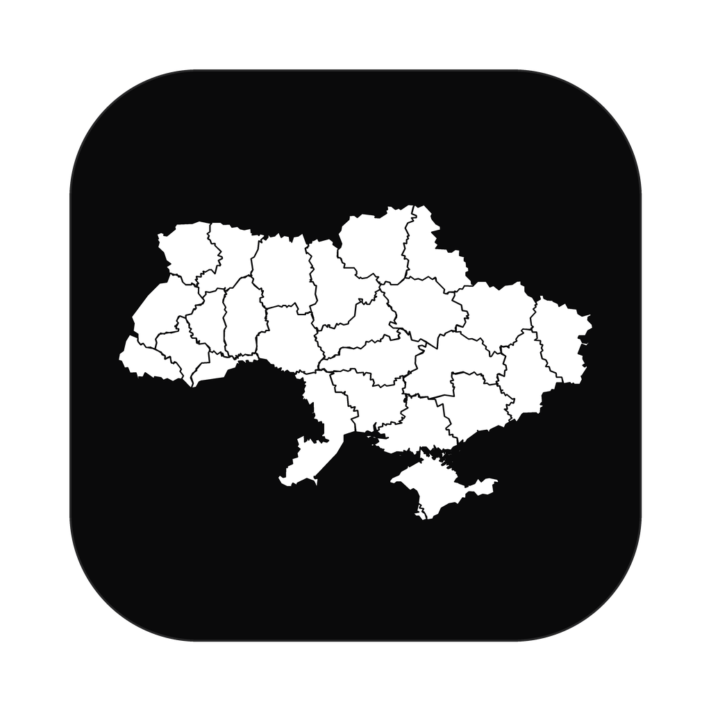
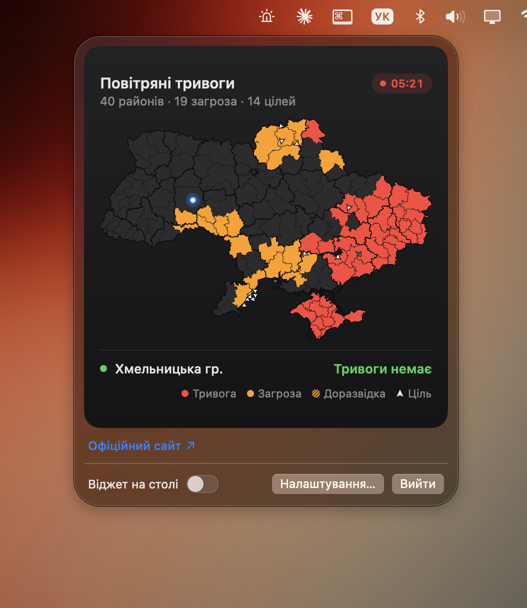

Тривога UA
Карта повітряних тривог по районах — прямо на робочому столі Mac. Сирена лише для вашого міста, цілі онлайн.
⬇ Завантажити для macOSВідкрийте UA-Alert.dmg і перетягніть UA Alert у «Програми».
Перший запуск: «Системні параметри → Конфіденційність і безпека» → «Все одно відкрити» (програма не підписана Apple).
Натисніть ⋯ на віджеті → «Мій город» і оберіть своє місто.
